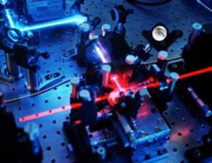

В последнее время в научном сообществе появляются сообщения о возможностях неконтролируемого несанкционированного съема информации с квантового канала связи и возможностях воздействия на фотоприемную аппаратуру легальных пользователей с целью получения необходимой заранее заданной комбинации бит ключа. Ниже приведены некоторые из них.
Как заявляют французские физики, они научились "незаметно" следить за фотоном, не поглощая его в процессе наблюдения, и измерять его характеристики, не меняя их при этом необратимым образом. Для этого используется так называемая технология QND (quantum non-demolition), видоизмененная для работы с отдельными фотонами.
Исследовательская группа под руководством Вадима Макарова из норвежского научно-технологического института в г. Трондхейм показала возможность взлома квантовых криптографических систем, использующих популярные детекторы SPCM-AQR на базе лавинных фотодиодов производства компании Perkin Elmer. Для этого «третьей стороне», желающей приобщиться к передаваемой информации, но при этом сохранить свое инкогнито, необходимо воздействовать на детектор мощными световыми импульсами. Одна из четырех аномалий, возникающих при облучении детектора световым излучением с пиковой мощностью 1−10 мВт, как показали исследования, может быть использована для взлома системы шифрования информации и, следовательно, является фактором уязвимости. При подаче мощного светового импульса на лавинный фотодиод детектора, работающий в режиме регистрации единичных фотонов, происходящие в электронной схеме детектора процессы приводят к тому, что он перестает реагировать на отдельные фотоны и начинает выдавать выходной сигнал только при регистрации мощного светового импульса. То есть детектор становится ослепленным и воспринимает только мощные сигналы, генерируемые злоумышленником. Этот феномен может быть использован для вскрытия систем криптографической защиты. Третья сторона может, регулируя мощность подаваемых на вход приемника «паразитных» световых импульсов, произвольно управлять его выходными сигналами. Это дает возможность проведения атаки типа Intercept-Resend, позволяющей перехватить отправленный заново отправителем криптографический ключ целиком и дешифрировать информацию. При этом факт перехвата сообщения останется загадкой для абонентов криптографических систем защиты данных. Фактически эта атака эквивалентна хорошо знакомой атаке «человек в середине». Вид оборудования осуществляющего такую атаку представлен на рис. 6.20.
 |
Рис. 6.20. Установка, реализующая атаку ослеплением |
Еще одна интересная атака связана с тем, что при попадании фотона на возбужденное вещество он стимулирует испускание фотона, абсолютно идентичного попавшему в него, т. е. на выходе появляются два одинаковых фотона, один из которых можно отделить специальным расщепителем фотонов и, измерив, получить передаваемые данные и взломать канал передачи ключей. Принцип излучения дополнительных фотонов возбужденным веществом используется в работе лазеров.